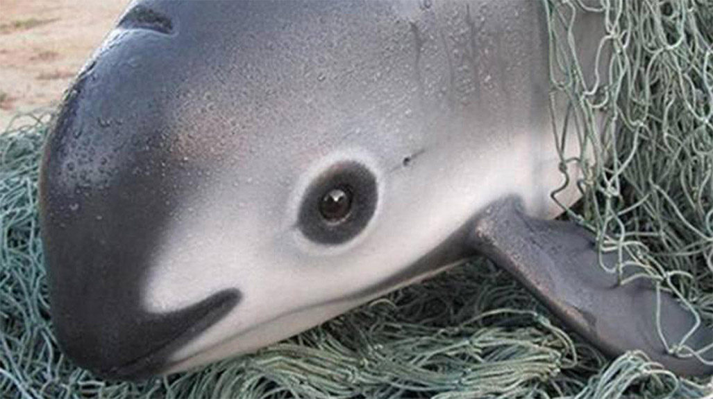

La vaquita (in spagnolo: [bakita]; Phocoena sinus) è una specie di focena endemica nella parte settentrionale del Golfo della California che è sull'orlo dell'estinzione.
La parola vaquita è spagnola per "piccola mucca".
La vaquita ha assunto il titolo di cetaceo più minacciato al mondo. È stato elencato come in pericolo critico dal 1996.
La popolazione era stimata a 600 nel 1997, sotto i 100 nel 2014, circa 60 nel 2015, circa 30 a novembre 2016, e solo 12-15 a marzo 2018, che portano alla conclusione che la specie sarà presto estinta. Una stima pubblicata nel marzo 2019 è che rimangono un massimo di 22 e un minimo di 6 focene vaquita.

DESCRIZIONE FISICA
Le vaquitas sono le specie più piccole e in via di estinzione dei Cetacei dell'infrastruttura e sono endemiche all'estremità settentrionale del Golfo della California. La vaquita è piuttosto tozza e ha una caratteristica forma focena. La specie è distinguibile dagli anelli scuri che circondano i loro occhi, macchie sulle loro labbra, e una linea che si estende dalle loro pinne dorsali alle loro bocche. Le loro schiene sono di un grigio scuro che sfuma ai lati inferiori bianchi. Quando le vaquitas maturano, le sfumature del grigio schiariscono. Le vaquitas femminili tendono a crescere più dei maschi. In media, le femmine maturano fino a una lunghezza di 140,6 cm (55,4 pollici), rispetto a 134,9 cm (53,1 pollici) per i maschi. La durata della vita, il modello di crescita, la riproduzione stagionale e la dimensione dei testicoli della vaquita sono tutti simili a quelli della focena del porto. Le pinne sono proporzionalmente più grandi di quelle di altre focene e la pinna è più alta e più falcata. Il cranio è più piccolo e il rostro è più corto e più largo rispetto ad altri membri del genere.
